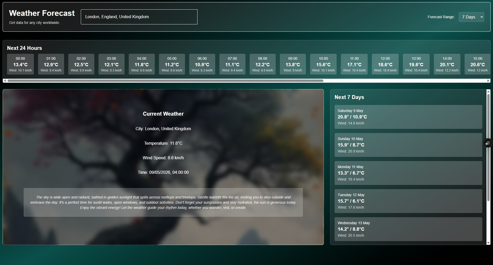
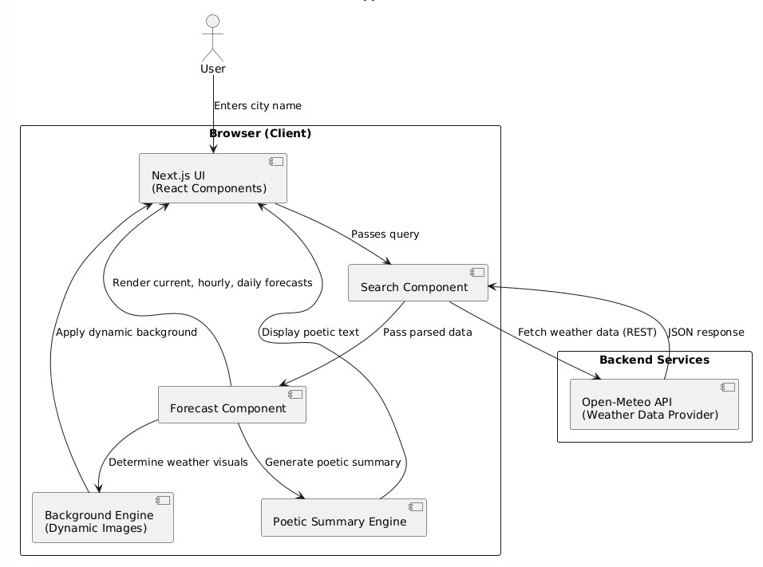
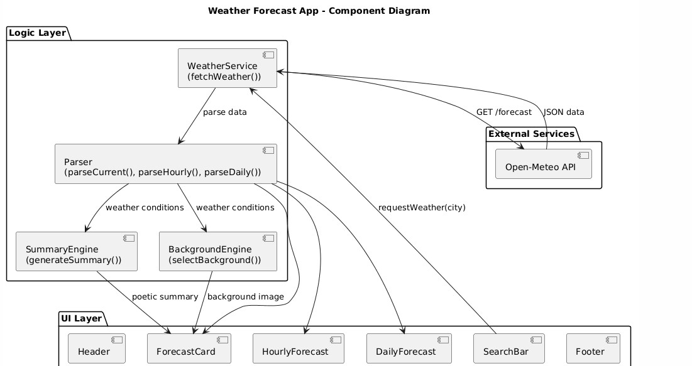
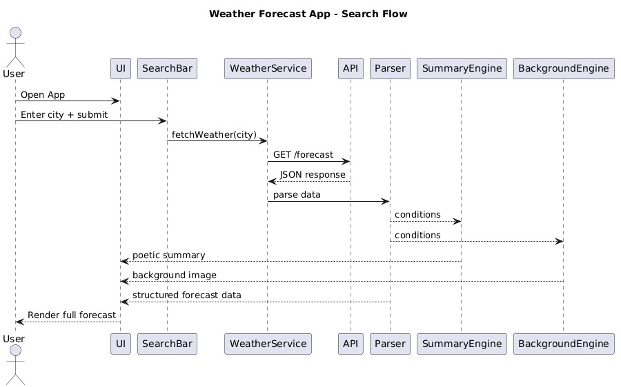

A responsive, modular weather experience built with React and Tailwind, blending data, design, and poetic storytelling.
Search any city and get current, hourly, and daily forecasts.
Weather-based background images and silhouette overlays.
Poetic Weather summaries with practical advice.
Fully responsive design with collapsible mobile controls.
Modular components for scalability and maintainability.

The Weather Forecast App began as a vision to create something more than a dashboard, an experience that feels atmospheric, expressive, and emotionally resonant.
It fetches real‑time weather data for any city worldwide and transforms it into a visual and narrative experience with dynamic backgrounds, silhouettes, and poetic summaries.

Built with Next.js and Tailwind CSS, the app uses modular components for scalability.
This diagram shows how the Weather Forecast App processes user input and displays results.
The user enters a city name, which the Search Component sends to the Open‑Meteo API to fetch weather data. The API returns a JSON response, parsed and passed to the Forecast Component. The Forecast Component renders current, hourly, and daily forecasts while coordinating with the Background Engine for dynamic visuals. Simultaneously, the Poetic Summary Engine generates expressive text to accompany the forecast. All components interact within the Next.js UI, creating a seamless, modular, and visually rich experience. Overall, the architecture blends data processing and creative presentation for an engaging weather interface.

The WeatherService component fetches data from the Open‑Meteo API using a REST request and receives a JSON response. The Parser processes this data through functions like parseCurrent(), parseHourly(), and parseDaily() to extract weather conditions. These parsed conditions are sent to the SummaryEngine and BackgroundEngine, which generate poetic summaries and select dynamic background images. The UI Layer then displays this information through components such as Header, ForecastCard, HourlyForecast, DailyForecast, SearchBar, and Footer. Each layer communicates smoothly, ensuring modularity and clear separation between data handling and presentation. Overall, the structure highlights a clean, scalable design that blends technical precision with creative output.

The sequence diagram shows how the app processes a weather search from the moment the user enters a city. The SearchBar sends the request to the WeatherService, which calls the external API to retrieve forecast data. The API returns a JSON response, which is passed to the Parser to extract structured weather conditions. These conditions are forwarded to both the SummaryEngine and BackgroundEngine to generate a poetic summary and select a matching background image. The WeatherService then returns the combined forecast data, summary, and visuals back to the UI. Finally, the UI renders the complete weather experience for the user in a single, seamless flow.
Building this app was a journey of blending technical precision with artistic expression. I wanted more than just a weather dashboard — I envisioned an experience that feels alive, poetic, and emotionally resonant.
“This app is more than a forecast — it’s a reflection of how I see technology: a canvas for creativity, clarity, and connection.”